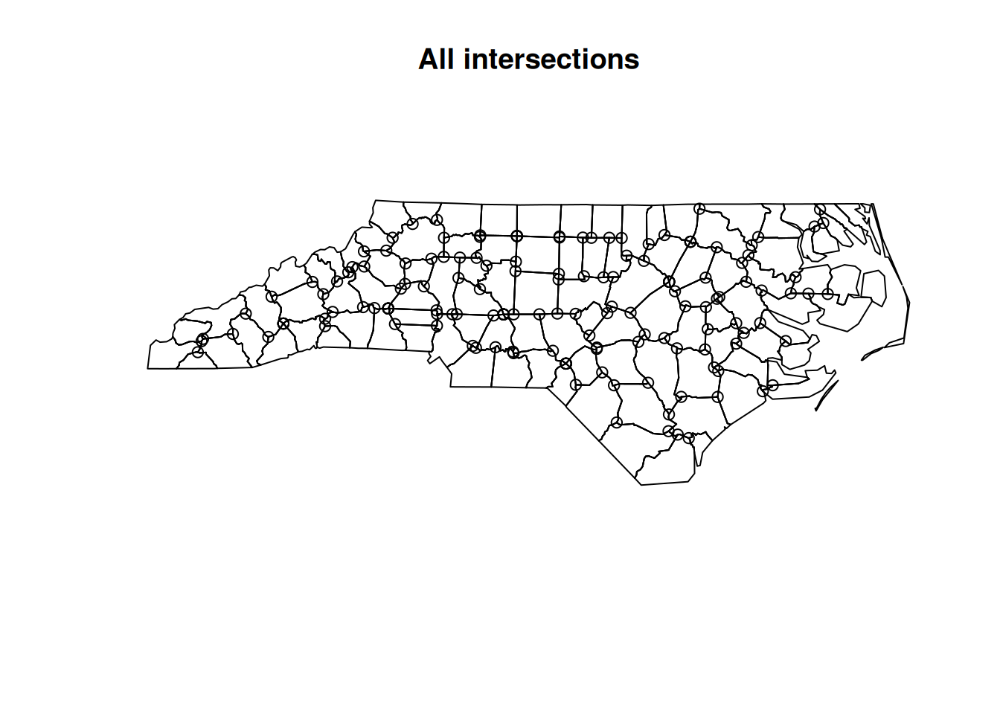
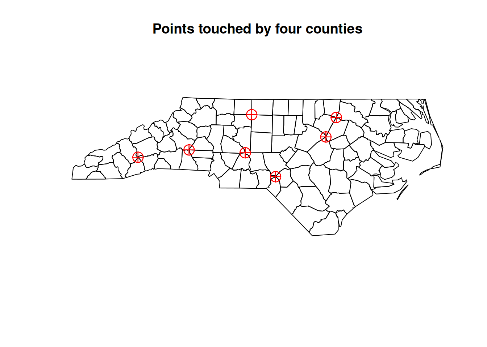
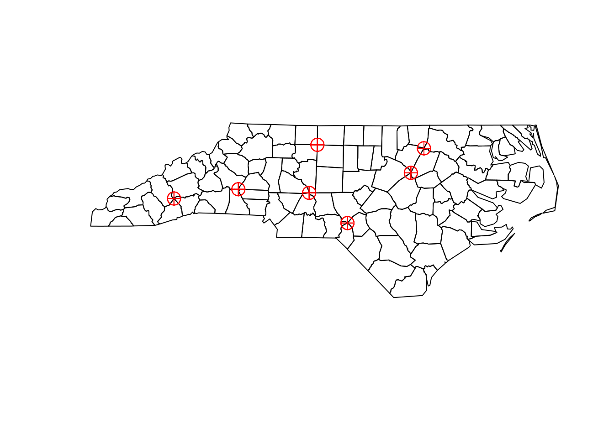

Describe a practical problem for which an n-ary intersection would be needed.
for a long-term set of polygons with fire extents, find the polygons that underwent 0, 1, 2, 3, … fires
for a set of extents of n individual plant species, find polygons with 0, 1, …, n species, or find the polygon(s) that contain a particular subset of plant species.
Exercise 3.4
How can you create a Voronoi diagram (figure 3.3) that has closed polygons for every point?
Voronoi diagrams have “open polygons”, areas that extend into infinity, for boundary points. These cannot be represented by simple feature geometries. st_voronoi chooses a default (square) polygon to limit the extent, which can be enlarged. Alternatively, the extent can be limited using st_intersection on its result:
F Intersection of green lines interior and red lines interior is empty
0 Intersection of green lines interior and red lines boundary results in one point in the middle of the green line
1 Intersection of green lines interior and red lines exterior results in a line covering most parts of the green line
F Intersection of green lines boundary and red lines interior is empty
F Intersection of green lines boundary and red lines boundary is empty
0 Intersection of green lines boundary and red lines exterior results in the two boundary points of the green line
1 Intersection of green lines exterior and red lines interior results in a line covering most parts of the red line
0 Intersection of green lines exterior and red lines boundary results in the upper boundary point of the red line
2 Intersection of green lines exterior and red lines results in a polygonal geometry covering everything except the two lines
(the boundary of a LINESTRING is formed by its two end points)
Exercise 3.7
Can a set of simple feature polygons form a coverage? If so, under which constraints? Yes, but I would say that the set may just contain one polygon, because simple features provide no way of assigning points on the boundary of two adjacent polygons to a single polygon.
Exercise 3.8
For the nc counties in the dataset that comes with R package sf, find the points touched by four counties.
# read datanc<-st_read(system.file("shape/nc.shp", package="sf"))# Reading layer `nc' from data source # `/home/runner/work/_temp/Library/sf/shape/nc.shp' # using driver `ESRI Shapefile'# Simple feature collection with 100 features and 14 fields# Geometry type: MULTIPOLYGON# Dimension: XY# Bounding box: xmin: -84.32385 ymin: 33.88199 xmax: -75.45698 ymax: 36.58965# Geodetic CRS: NAD27# get intersections(nc_geom=st_geometry(nc))# Geometry set for 100 features # Geometry type: MULTIPOLYGON# Dimension: XY# Bounding box: xmin: -84.32385 ymin: 33.88199 xmax: -75.45698 ymax: 36.58965# Geodetic CRS: NAD27# First 5 geometries:# MULTIPOLYGON (((-81.47276 36.23436, -81.54084 3...# MULTIPOLYGON (((-81.23989 36.36536, -81.24069 3...# MULTIPOLYGON (((-80.45634 36.24256, -80.47639 3...# MULTIPOLYGON (((-76.00897 36.3196, -76.01735 36...# MULTIPOLYGON (((-77.21767 36.24098, -77.23461 3...nc_ints=st_intersection(nc_geom)# although coordinates are longitude/latitude, st_intersection# assumes that they are planarplot(nc_ints, main ="All intersections")

# Function to check class of intersection objectsget_points=function(x){if(class(x)[2]=="POINT")return(x)}# get pointspoints=lapply(nc_ints, get_points)points[sapply(points,is.null)]<-NULLsf_points=st_sfc(points)st_crs(sf_points)=st_crs(nc)# get points with four neighbouring geometries (=states)touch=st_touches(sf_points, nc_geom)four_n=sapply(touch, function(y)which(length(y)==4))names(four_n)=seq_along(four_n)point_no=array(as.numeric(names(unlist(four_n))))result=st_sfc(points[point_no])plot(nc_geom, main ="Points touched by four counties")plot(result, add =TRUE, col ="red", pch =10, cex =2)

A more compact way might be to search for points where counties touch another county only in a point, which can be found using st_relate using a pattern:
(pts=nc%>%st_relate(pattern ="****0****"))# although coordinates are longitude/latitude, st_relate_pattern# assumes that they are planar# Sparse geometry binary predicate list of length 100, where# the predicate was `relate_pattern'# first 10 elements:# 1: (empty)# 2: (empty)# 3: (empty)# 4: (empty)# 5: (empty)# 6: (empty)# 7: (empty)# 8: (empty)# 9: 31# 10: 26nc%>%st_relate(pattern ="****0****")%>%lengths()%>%sum()# although coordinates are longitude/latitude, st_relate_pattern# assumes that they are planar# [1] 28
which is, as expected, four times the number of points shown in the plot above.
nc=st_geometry(nc)s2=sf_use_s2(FALSE)# use GEOM geometry# Spherical geometry (s2) switched offpts=st_intersection(nc, nc)# although coordinates are longitude/latitude, st_intersection# assumes that they are planarpts=pts[st_dimension(pts)==0]plot(st_geometry(nc))plot(st_geometry(pts), add =TRUE, col ="red", pch =10, cex =2)

sf_use_s2(s2)# set back# Spherical geometry (s2) switched on
Exercise 3.9
How would figure 3.6 look like if delta for the y-coordinate was positive? Only cells that were fully crossed by the red line would be grey: